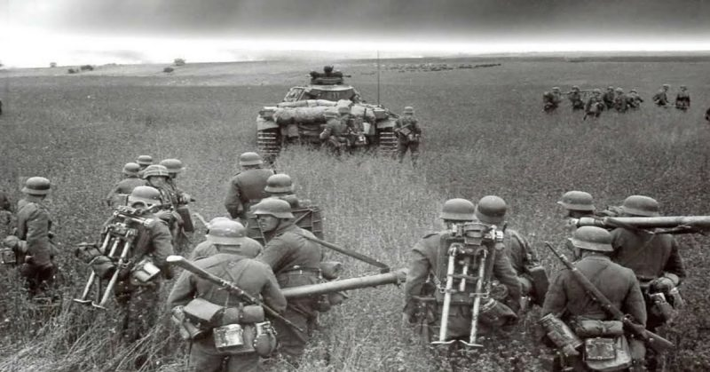
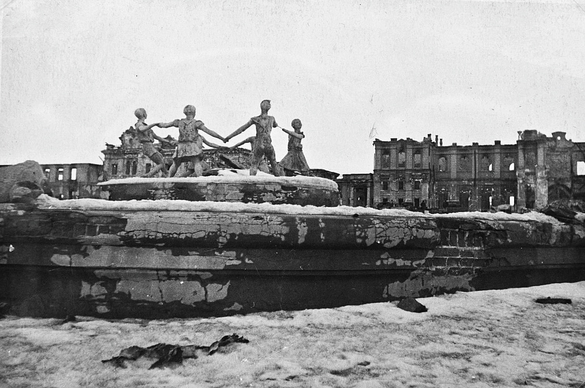

Operation Barbarossa (1941)
Launched on June 22, 1941, this was the Axis invasion of the Soviet Union. It stands as the largest military operation in human history in terms of both manpower and casualties. Over 3 million Axis troops crossed the Soviet border. The Germans advanced rapidly but were ultimately halted just outside Moscow by the severe Russian winter, overextended supply lines, and fierce Soviet resistance.

Battle of Stalingrad (1942 - 1943)
Often considered the psychological and military turning point of the war in Europe. The German 6th Army was encircled and completely destroyed by the Red Army in brutal urban combat. It remains one of the bloodiest battles in the history of warfare, with combined casualties estimated at nearly 2 million soldiers and civilians.

Battle of Kursk (July 1943)
Known as the largest tank battle in history. The Germans attempted a pincer movement to cut off a massive Soviet salient (bulge) in the front lines. However, the Soviets had prior intelligence and built a staggering network of defensive belts. The devastating German defeat here meant they permanently lost the initiative and would never again launch a major offensive on the Eastern Front.

The Fall of Berlin (April - May 1945)
The final major offensive of the European theatre. Millions of Soviet Red Army soldiers surrounded and assaulted the heavily defended German capital. The intense street-to-street fighting culminated in the capture of the Reichstag, the suicide of Adolf Hitler, and the final unconditional surrender of Nazi Germany on May 8, 1945.